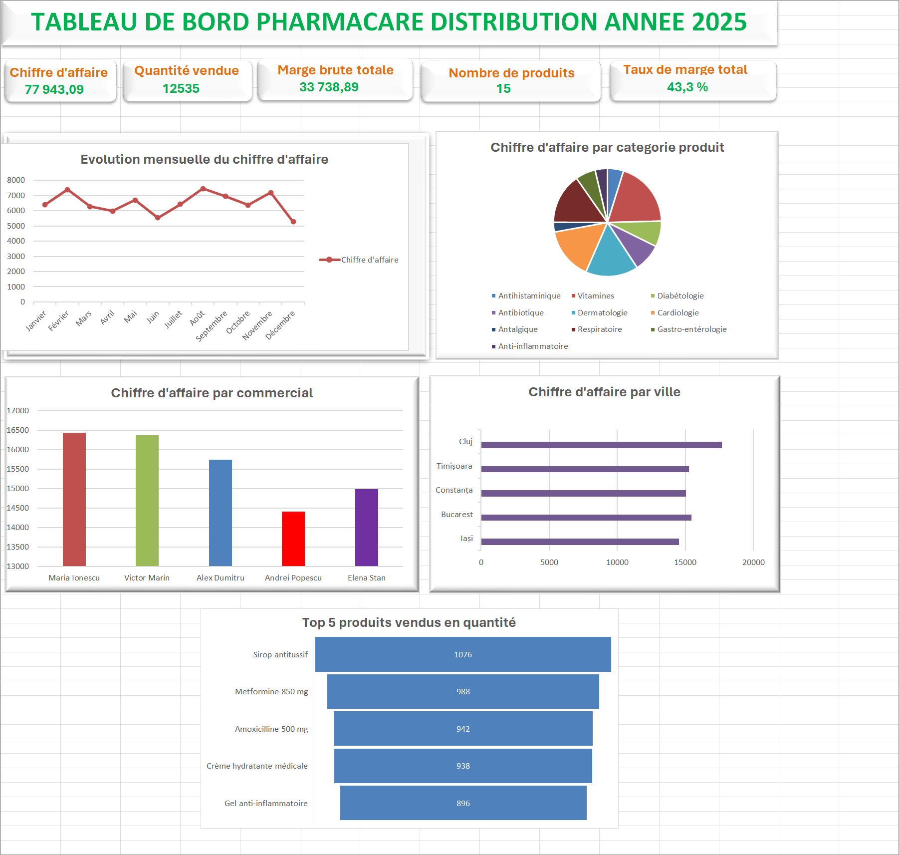
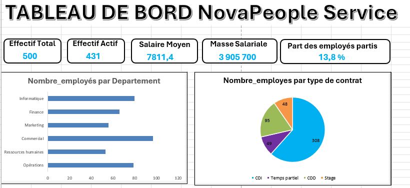
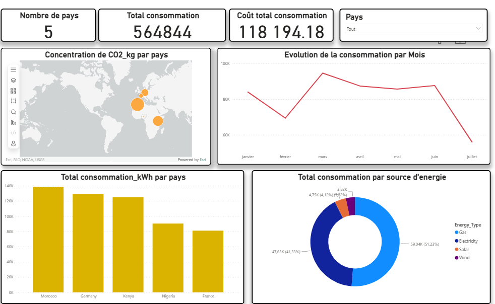

Je transforme vos données brutes en décisions claires
SQL, Excel, Power BI et Tableau : 11 projets menés de la question métier au tableau de bord, avec des résultats chiffrés et vérifiés. Ancien formateur Power BI, je rends les chiffres compréhensibles par tous.

Des résultats, pas seulement des fichiers
Trois projets et leurs chiffres clés. Les 11 études de cas sont détaillées sur la page Projets.

PharmaCare — ventes et rentabilité
Marge brute 33 739 · taux de 43,3 %
500 ventes analysées pour la direction : produits les plus rentables, régions, commerciaux et évolution mensuelle.
Voir l'étude de cas →
NovaPeople — HR Analytics
13,8 % de départs · 500 employés
Le service informatique, pourtant le mieux payé, perd le plus de salariés (17,5 %) : un vrai sujet de fidélisation.
Voir l'étude de cas →
Power BI — énergie et ventes
4 rapports interactifs · 5 pays
Le gaz (51 %) et l'électricité (41 %) dominent la consommation ; cartes, tendances et filtres pour décider vite.
Voir l'étude de cas →La rigueur scientifique au service de la donnée
La physique-chimie m'a formé à une méthode ; la data analyse en est un terrain d'application direct.
Rigueur méthodologique
Habitué au protocole hypothèse → mesure → analyse → conclusion, je ne me contente pas d'un chiffre : je vérifie qu'il tient la route avant de le présenter.
Une pratique déjà éprouvée
Formateur Microsoft Office puis Power BI, Power Query et Power Pivot chez Lahora Tech Africa (2023 – 2025), puis SQL, PostgreSQL et Tableau approfondis à travers des projets menés jusqu'au bout.
Structurer un problème
Capacité à partir d'une question métier encore floue et à la traduire en requêtes, en modèles de données et en visuels exploitables.
Communiquer les résultats
Un résultat juste ne sert à rien s'il n'est pas compris : chaque analyse est pensée pour être lue par un public non technique.
Les outils du métier, pratiqués sur des cas réels
Chaque outil a été mobilisé sur au moins un projet complet, du besoin métier au livrable final.
PostgreSQL / SQL
Modélisation de schémas, jointures, agrégations et requêtes métier sur des jeux de données multi-tables.
Excel
Power Query, tableaux croisés dynamiques et graphiques pour nettoyer et faire parler des données brutes.
Power BI
Modélisation, mesures et dashboards interactifs pour le suivi commercial et opérationnel.
Tableau
Construction de dashboards analytiques à partir de données préparées, orientés lecture métier.